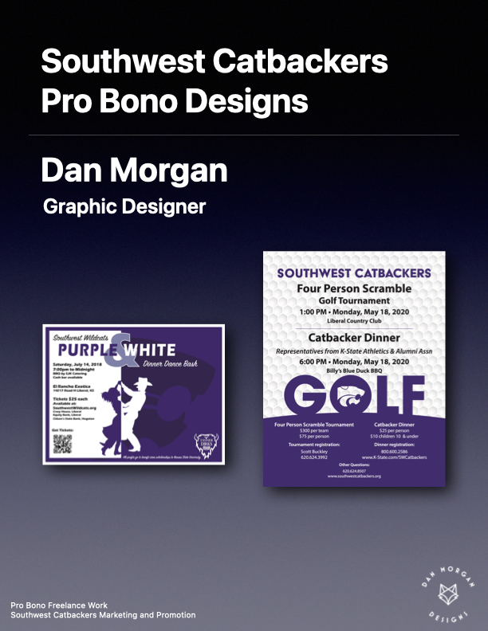
Pro bono graphic design and marketing assistance for a local collegiate booster club
Pro Bono, Print Design, Marketing
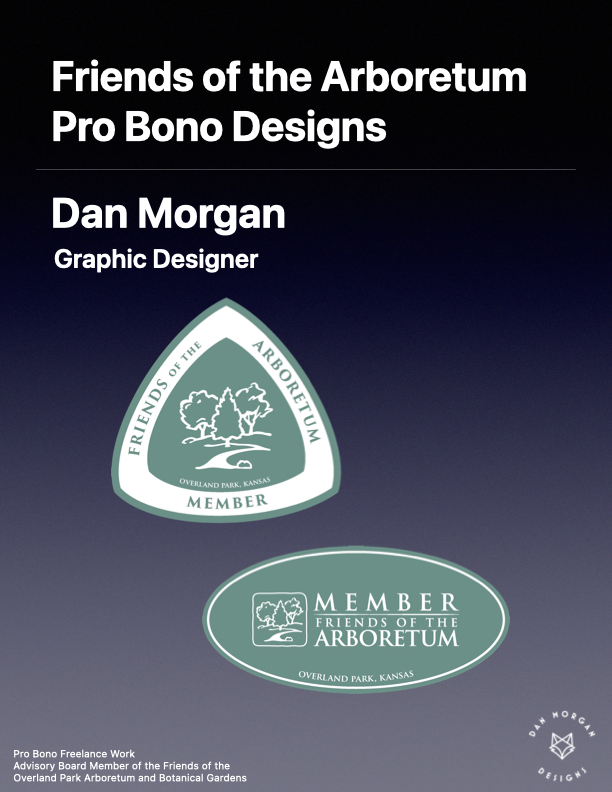
Pro bono graphic design ideas to reward or encourage membership in our organization.
Pro Bono, Print Design, Marketing
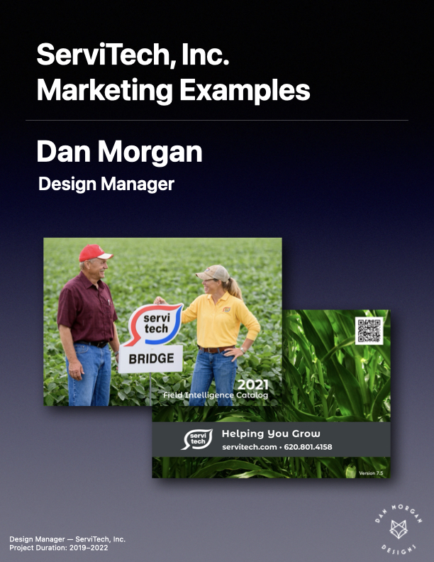
Field Intelligence catalog, digital media, and print mmedia.
Print Design, Marketing
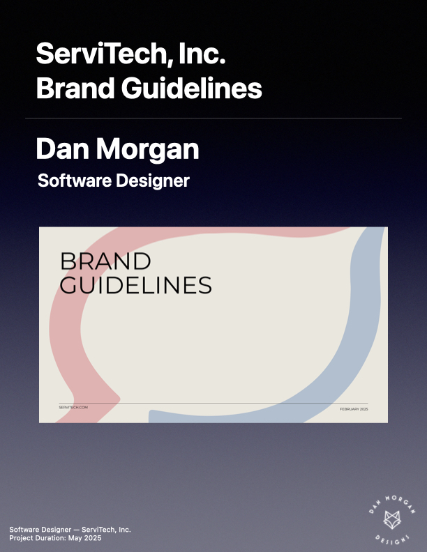
History, colors, typography, and logo usage guidelines for ServiTech, Inc.
Brand/Identity, Marketing
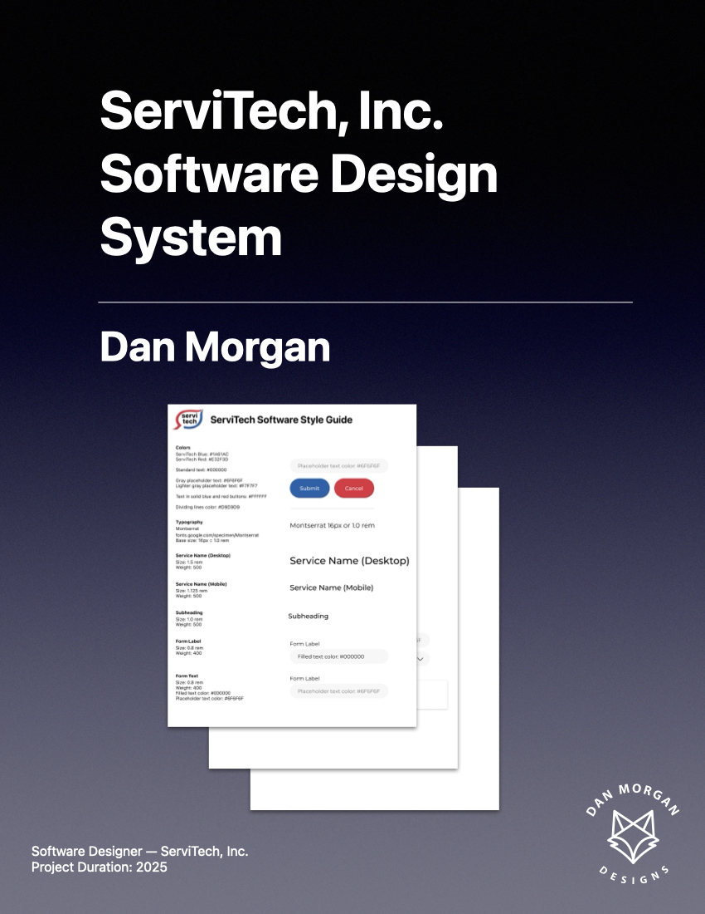
Colors, typography, components, and patterns for all ServiTech services and websites.
Brand/Identity, UX/UI, Web Design
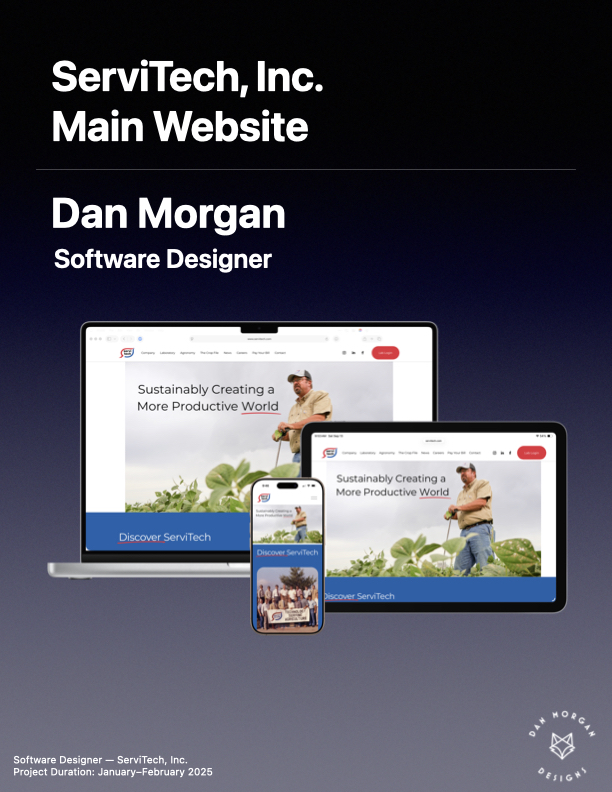
New public-facing website for ServiTech, Inc.
Web Design, UX/UI, Marketing
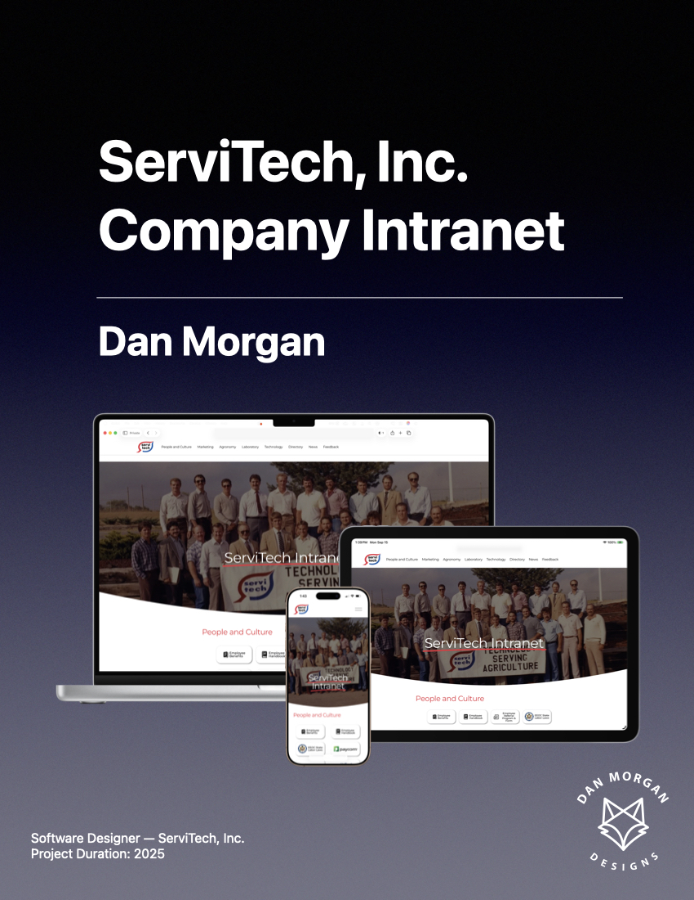
New company internal intranet for ServiTech, Inc.
Web Design, UX/UI
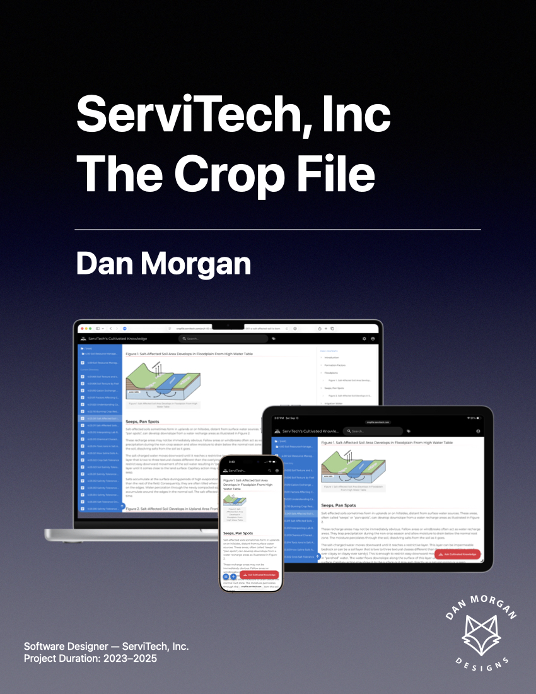
Comprehensive searchableagricultural knowledge base and agent.
Web Design, UX/UI
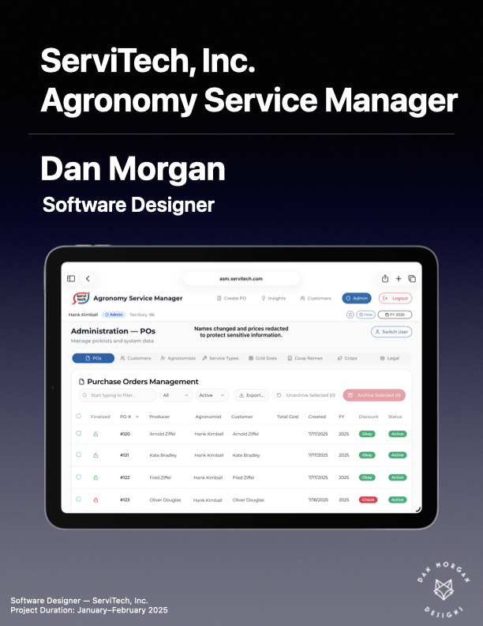
Cross-platform web app for writing purchase orders to perform services for customers.
Web Dev, UX/UI, Database
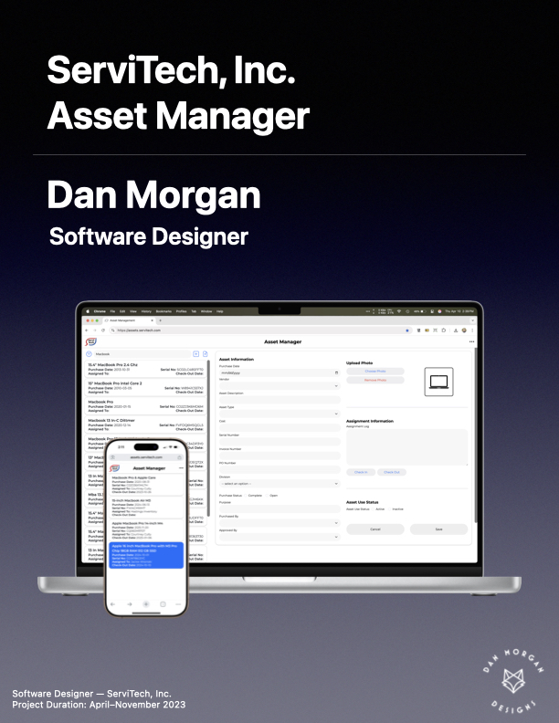
Internal service used to manage company assets from purchase through retirement.
Web Design, UX/UI
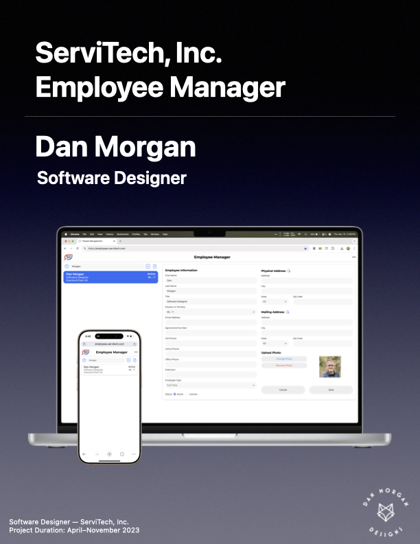
Used to manage current and past employees for internal service pick lists and directory.
Web Design, UX/UI